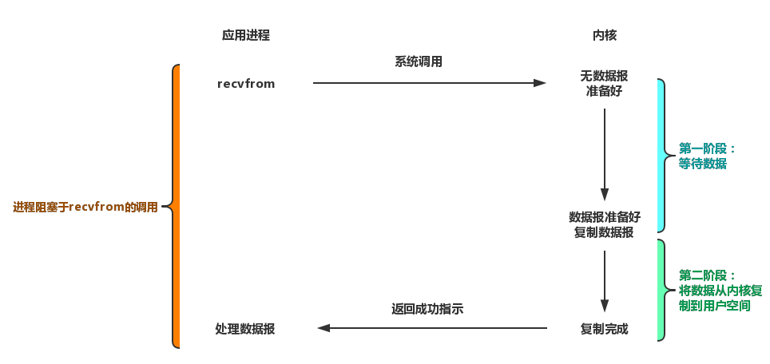
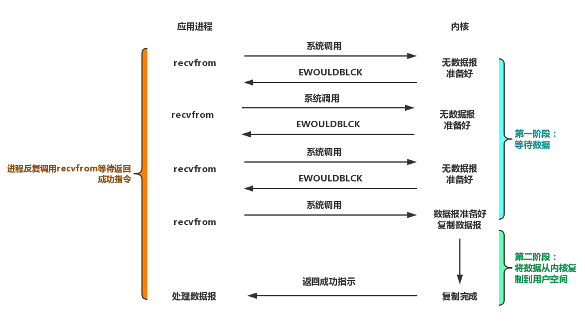
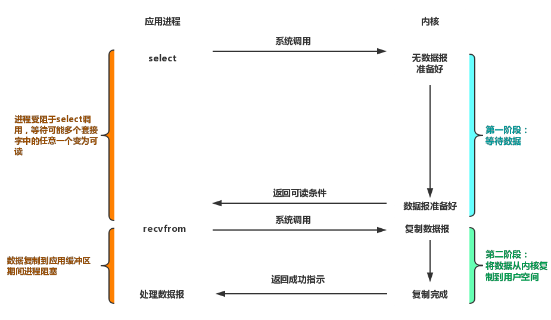
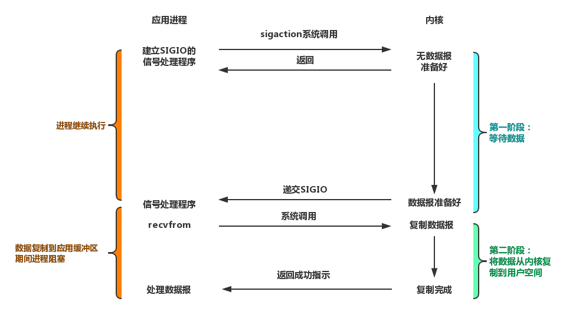
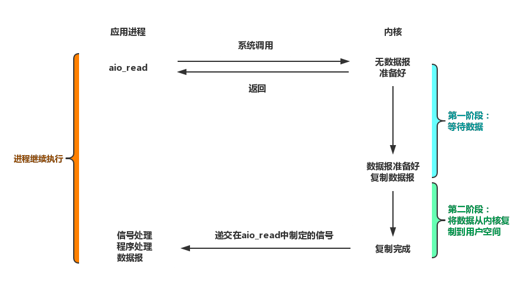

1 五种IO模型
把内存中的数据写到外部设备（硬盘、终端、网络等）上这个动作称为输出（写）Output操作，把外部设备的数据读取到内存中的这个动作称为输入（读）Input操作，我们把这种输入和输出动作称为IO操作。IO操作是操作系统的底层功能实现，一般是通过调用IO指令完成。在本系列文章中，所有的IO都是网络IO。
常见的IO模型有：阻塞式IO（blocking IO）、非阻塞式IO（nonblocking IO）、IO复用（IO multiplexing）、信号驱动式IO（signal driven IO）和异步IO（asynchronous IO）。其中前四种IO模型为同步IO，最后一种为异步IO。
对于每一种模型，一个输入操作通常包含两个不同的阶段：
- 第一阶段：等待数据准备好；
- 第二阶段：将数据从内核拷贝到进程中。
对于一个套接字上的输入操作，第一阶段通常需要等待数据从网络中到达，当所等待的分组到达时，它被复制到内核中的某个缓冲区。第二阶段把数据从内核缓冲区复制到应用进程缓冲区。具体如下图所示：

1.1 阻塞式IO
以在食堂就餐为例，当自己点了一份盖饭，然后原地等着厨师把盖饭做好，接着自己端到餐桌上就餐。这样的流程就为阻塞式IO，即当厨师给你做饭时，你需要在原地等待，而不能做其他的事情。
在网络编程中，读取客户端的数据需要调用recvfrom，在默认情况下，这个调用会阻塞到数据接收完成。具体流程如下图所示：

这是最简单的IO模型，当文件描述符（fd）较少、就绪很快的情况下可以使用。
1.2 非阻塞式IO
以在食堂就餐为例，当自己点了一份盖饭，点完之后先回到桌上看一会书，然后厨师差不多将要做好盖饭后，再去问问盖饭做完了没有，如果做好了就去端了回到餐桌上就餐，如果没有没有做好再等一会在过去问，依次循环直到饭做好为止。这样的流程就是非阻塞式IO。
对于非阻塞IO，需要设置socket为non-blocking。具体流程如下图所示：

1.3 IO复用
以在食堂就餐为例，当进入食堂后，你将你需要点的盖饭告诉服务员，服务员通知厨师去做，等盖饭做好后，服务员再过来通知你饭已经做好了，然后你再去窗口将饭端到自己的餐桌上就餐。
在网络编程中，我们一般调用select、poll或者epoll来等待数据报套接字变为可读，当套接字为可读时，再调用recvfrom把所读数据复制到应用进程缓冲区中。具体流程图如下图所示：

1.4 信号驱动式IO
以在食堂就餐为例，当你想吃中饭时，先给食堂厨师发个短信，告诉需要一份盖饭，厨师收到短信后回复“收到，马上为你准备”；当厨师将盖饭做好后，发送一个短信告诉你盖饭已经做好了，这时你再去窗口取盖饭到餐桌上就餐。
在网络编程中，信号驱动式IO使用的比较少。具体流程图如下图所示：

1.5 异步IO
以在食堂就餐为例，当进入食堂后，你将你需要点的盖饭告诉服务员，然后你就取餐桌等待即可；服务员通知厨师去做，等盖饭做好后，服务员将盖饭端到你餐桌。
在网络编程中，其具体流程图如下图所示：

2 网络编程模型
基于上述五种模型，在Java中，随着NIO和NIO2.0(AIO)的引入，有BIO、NIO和AIO网络编程模型。